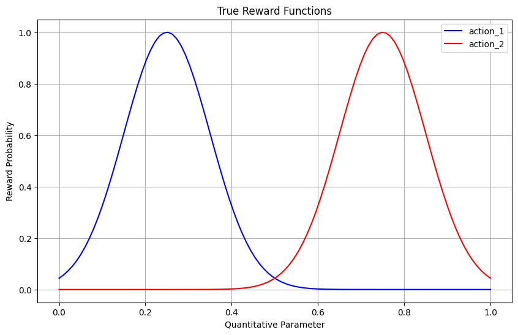
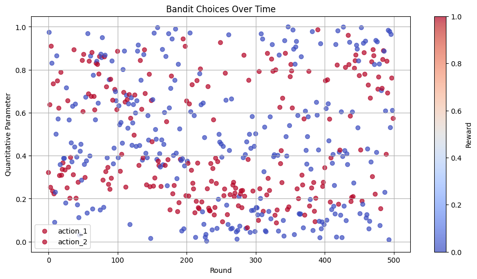
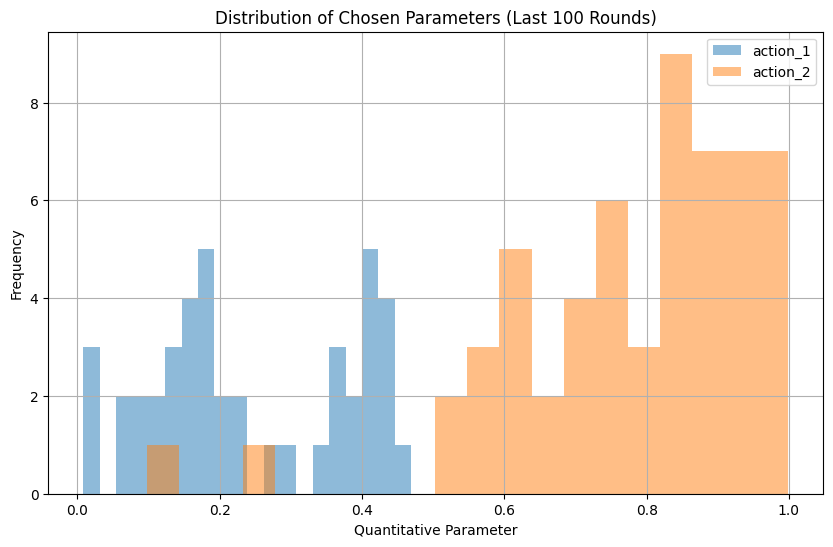
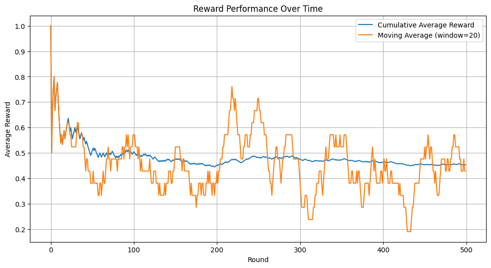

Stochastic Multi-Armed Bandit with Zooming Model
This notebook demonstrates the usage of the Zooming model for quantitative action spaces with the stochastic multi-armed bandit (sMAB) implementation in pybandits.
The Zooming model adaptively partitions a continuous action space and fits a model (e.g., Beta) to each segment. This allows efficient exploration and exploitation in continuous or high-cardinality action spaces through an adaptive discretization approach.
References:
[1]:
import matplotlib.pyplot as plt
import numpy as np
from pybandits.quantitative_model import SmabZoomingModel
from pybandits.smab import SmabBernoulli
Setup
First, we’ll define actions with quantitative parameters. In this example, we’ll use two actions, each with a one-dimensional quantitative parameter (e.g., price point or dosage level) ranging from 0 to 1.
[2]:
# For reproducibility
np.random.seed(42)
# Define actions with zooming models
actions = {"action_1": SmabZoomingModel.cold_start(dimension=1), "action_2": SmabZoomingModel.cold_start(dimension=1)}
Now we can initialize the SmabBernoulli bandit with our zooming models:
[3]:
# Initialize the bandit
smab = SmabBernoulli(actions=actions)
Simulate Environment
Let’s create a reward function that depends on both the action and its quantitative parameter. For illustration purposes, we’ll define that:
action_1has optimal parameter values around 0.25action_2has optimal parameter values around 0.75
The reward probability follows a bell curve centered around these optimal values.
[4]:
def reward_function(action, quantity):
if action == "action_1":
# Bell curve centered at 0.25
prob = np.exp(-((quantity - 0.25) ** 2) / 0.02)
else: # action_2
# Bell curve centered at 0.75
prob = np.exp(-((quantity - 0.75) ** 2) / 0.02)
return np.random.binomial(1, prob)
Let’s visualize our reward functions to understand what the bandit needs to learn:
[5]:
x = np.linspace(0, 1, 100)
y1 = [np.exp(-((xi - 0.25) ** 2) / 0.02) for xi in x]
y2 = [np.exp(-((xi - 0.75) ** 2) / 0.02) for xi in x]
plt.figure(figsize=(10, 6))
plt.plot(x, y1, "b-", label="action_1")
plt.plot(x, y2, "r-", label="action_2")
plt.xlabel("Quantitative Parameter")
plt.ylabel("Reward Probability")
plt.title("True Reward Functions")
plt.legend()
plt.grid(True)
plt.show()

Bandit Training Loop
Now, let’s train our bandit by simulating interactions for several rounds:
[6]:
n_rounds = 500
history = []
for t in range(n_rounds):
# Sample random quantities to be evaluated for each action
# In a real-world scenario, these might be potential price points to test
# Predict best action (n_samples=1)
pred_actions, probs = smab.predict(n_samples=1)
chosen_action = pred_actions[0][0]
chosen_quantity = pred_actions[0][1][0]
# Observe reward
reward = reward_function(chosen_action, chosen_quantity)
# Update bandit
smab.update(actions=[chosen_action], rewards=[reward], quantities=[chosen_quantity])
# Store history
history.append((t, chosen_action, chosen_quantity, reward))
Analyze Results
Let’s visualize the bandit’s learning process and choices over time:
[7]:
# Extract data from history
rounds = [h[0] for h in history]
actions_hist = [h[1] for h in history]
quantities_hist = [h[2] for h in history]
rewards_hist = [h[3] for h in history]
# Create a scatter plot of chosen quantities over time
plt.figure(figsize=(12, 6))
colors = {"action_1": "blue", "action_2": "red"}
for action in np.unique(actions_hist):
mask = [a == action for a in actions_hist]
plt.scatter(
[rounds[i] for i in range(len(mask)) if mask[i]],
[quantities_hist[i] for i in range(len(mask)) if mask[i]],
c=[rewards_hist[i] for i in range(len(mask)) if mask[i]],
cmap="coolwarm",
alpha=0.7,
label=action,
)
plt.xlabel("Round")
plt.ylabel("Quantitative Parameter")
plt.title("Bandit Choices Over Time")
plt.legend()
plt.colorbar(label="Reward")
plt.grid(True)
plt.show()

Let’s look at the distribution of choices in the last 100 rounds, when the bandit has had time to learn:
[8]:
# Analyze the last 100 rounds
last_100_actions = actions_hist[-100:]
last_100_quantities = quantities_hist[-100:]
plt.figure(figsize=(10, 6))
# Plot histogram of quantitative parameters for each action
for action in np.unique(actions_hist):
action_quantities = [last_100_quantities[i] for i in range(100) if last_100_actions[i] == action]
if action_quantities:
plt.hist(action_quantities, bins=20, alpha=0.5, label=action)
plt.xlabel("Quantitative Parameter")
plt.ylabel("Frequency")
plt.title("Distribution of Chosen Parameters (Last 100 Rounds)")
plt.legend()
plt.grid(True)
plt.show()

Reward Performance Over Time
Let’s analyze how the reward performance improves as the bandit learns:
[9]:
# Calculate cumulative average reward
cumulative_reward = np.cumsum(rewards_hist)
cumulative_avg_reward = [cumulative_reward[i] / (i + 1) for i in range(len(cumulative_reward))]
# Calculate moving average with window=20
window_size = 20
moving_avg = [np.mean(rewards_hist[max(0, i - window_size) : i + 1]) for i in range(len(rewards_hist))]
plt.figure(figsize=(12, 6))
plt.plot(cumulative_avg_reward, label="Cumulative Average Reward")
plt.plot(moving_avg, label=f"Moving Average (window={window_size})")
plt.xlabel("Round")
plt.ylabel("Average Reward")
plt.title("Reward Performance Over Time")
plt.legend()
plt.grid(True)
plt.show()

Conclusion
The Zooming model with sMAB allows efficient exploration and exploitation of continuous action parameters. It adaptively refines the segmentation of the parameter space, concentrating more segments in high-reward regions for finer discretization.
This approach is particularly useful when:
Actions have continuous parameters that affect rewards
The reward function is unknown and needs to be learned
The optimal parameter values may vary across different actions
Real-world applications include pricing optimization, dose finding in medicine, or any scenario involving continuous parameter tuning.